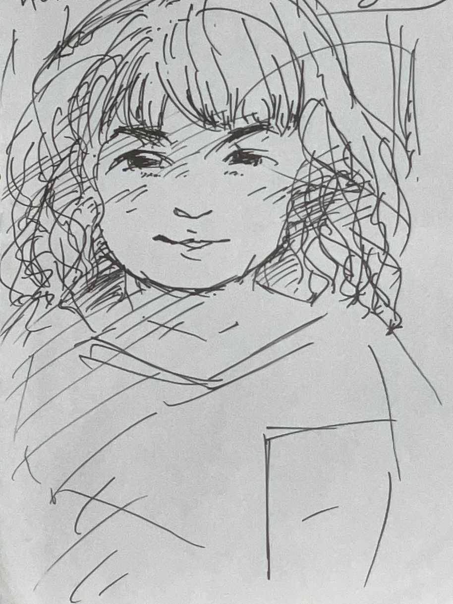

ウクレレでライディーンを弾いてもらった。うそやん😂 広東語を教えてもらった。今日係幾月幾號？ ノルウェー人とおジャ魔女どれみを歌った。不思議な力が沸いたら何をしよう。鳥とか魚と話したい。でも鳥はまじで話せる人いるんだよな。
干潟に行った。
マハーサシュトラの人と話した。ネパール語をやるのでそのうち話せるようになるかも。アチャールしか知らんけど。

さんまは塩焼き（SUNOサイト） https://main.vrfsm.pages.dev/?id=cf3df218-c923-4372-8da2-055870bbf33a VR-FSM（VRサイト） 小さな規則から生まれる秩序（VRサイト）
勅使河原蒼風 假屋崎省吾 公孙龙 鲁迅 老子 ニーチェ 野矢茂樹 落合陽一 陆羽 丿貫 岡倉天心 ジェームス・ブラウン Audrey Tang フロイト ラカン 坂口安吾 ウスタッド・ザキール・フセイン アララカ ムッシュかまやつ 川上音二郎 和嶋慎治 だいじろー 水野太貴 项羽 サラディン 矢野顕子